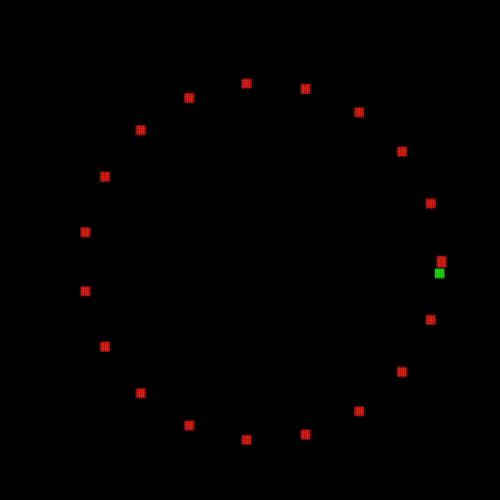
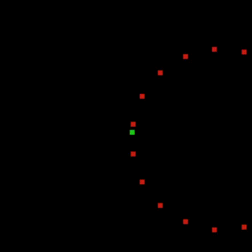
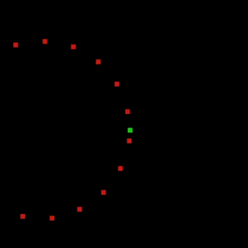

Projeto: referencial do jogo
Objetivo: realizar uma mudança de referencial em tempo real
Em algumas situações, como jogos digitais, gostaríamos de mudar o referencial sobre o qual estamos visualizando. Um exemplo disso é um jogo em primeira pessoa: embora o personagem, em relação ao mundo, possa caminhar por um espaço qualquer, toda a visão que o jogador tem é de acordo com o referencial do próprio personagem.
Neste exercício, vamos partir do pequeno jogo abaixo. Ao executar o código, você deve ver um personagem verde girando no meio de vários pontos vermelhos.

Veja no código que o jogador é representado pela variável s e os pontos ao seu redor são representados no vetor pontos_loc.
import pygame
import numpy as np
pygame.init()
# Tenho aqui vários pontos sobre uma circunferência
angulo = np.linspace(0, 2*np.pi, 20)
pontos_loc = np.vstack ( (100*np.cos(angulo)+200, 100*np.sin(angulo)+200, np.ones(20)) )
# Controle de tempo
t = 0
# Velocidade angular (rotacoes por segundo)
v = 0.2
# Tamanho da tela e definição do FPS
screen = pygame.display.set_mode((400, 400))
clock = pygame.time.Clock()
FPS = 60 # Frames per Second
BLACK = (0, 0, 0)
COR_PERSONAGEM = (30, 200, 20)
COR_PONTOS = (200, 30, 20)
# Personagem
personagem = pygame.Surface((5, 5)) # Tamanho do personagem
personagem.fill(COR_PERSONAGEM) # Cor do personagem
# Pontos
pontos = pygame.Surface((5, 5))
pontos.fill(COR_PONTOS) # Cor dos pontos
rodando = True
while rodando:
# Capturar eventos
for event in pygame.event.get():
if event.type == pygame.QUIT:
rodando = False
# Controlar frame rate
clock.tick(FPS)
# Movimento do personagem
t += 1/FPS
theta = v*t
s = np.array([[200],[200]]) + 100 * np.array([ [np.cos(2*np.pi*theta)], [-np.sin(2*np.pi*theta)]])
s = np.vstack( (s, np.ones(1)))
# Desenhar fundo
screen.fill(BLACK)
# Dica: use pontos_loc_y para receber o resultado das transformações feitas sobre pontos_loc
pontos_loc_y = pontos_loc
# Desenhar pontos
for p in range(pontos_loc.shape[1]):
rect = pygame.Rect(pontos_loc_y[0:2,p], (2, 2)) # First tuple is position, second is size.
screen.blit(pontos, rect)
# Desenhar personagem
rect = pygame.Rect((s)[0:2,0], (10, 10)) # First tuple is position, second is size.
screen.blit(personagem, rect)
# Update!
pygame.display.update()
# Terminar tela
pygame.quit()
Veja que a posição do jogador está no vetor s, que é recalculado a cada iteração do jogo.
Gostaríamos de manter nosso jogador sempre no centro da tela, mas gostaríamos de usar somente multiplicações matriciais para isso.
- Através de uma nova matriz \(T\) (crie essa matriz!), transforme os pontos do vetor
pontos_loce do próprio vetorsde forma que a tela fique sempre centralizada no jogador. Seu resultado deveria ser um ponto verde parado na tela e vários pontos vermelhos girando ao redor dele. Lembre-se que o ponto central da tela é o ponto \((200,200)\) O resultado deve ser parecido com isso:

- Após, gostaríamos de manter a "frente" do jogador sempre virada para cima, isto é, vamos fazer uma transformação para que todos os pontos do mundo virtual girem em torno do nosso personagem. O resultado deve ser algo parecido com:

Lembre-se!
Uma matriz de translação se parece com:
Uma matriz de rotação, que realiza a rotação de vetores ao redor da origem, se parece com: